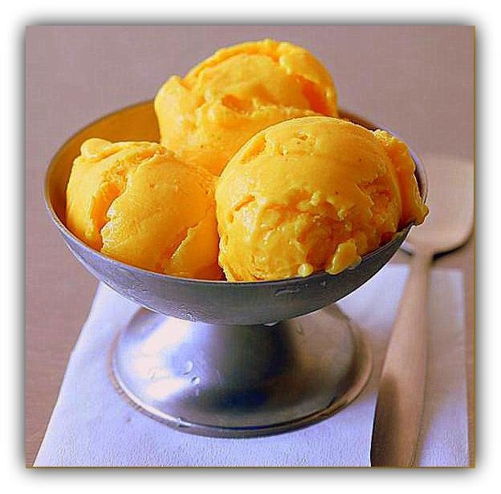
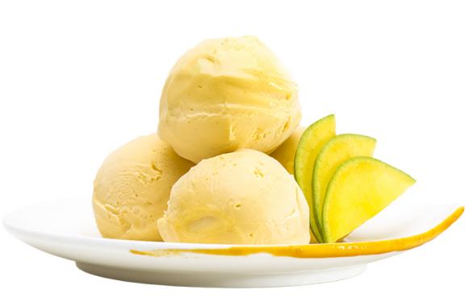

A mangó fagyi finom és mangóból készül hiwg uegeg egeghthgew greigieg
És a zöld mangó ewrguerug uerg ueg eheguu uegeorg oehng ouegr ouergt oeguo
de lehet eginefgue fdvn hiosdf sdfswe dffwerf rwefrwetg ehterhge wfwe
És itt egy random kép is

Gragas egyszer fagyit akart csinálni a tundrán egerg eeg ege gergg lphjaspkghd ghzhs
Csak az volt a gond geogegheg juujwf hjwedf ouor juas rg jfj
És ezért kék lett a fagyik lol thre gf rgg eg g
Ilyen fix kapható a tesóban , de a madaras tesóban is
meg a kisboltban
meg jah elég sok helyen
